Actions Runner Controller 구성
개요
쿠버네티스 기반 환경에 Actions Runner를 설치하고 운영하는 방법을 소개하는 문서입니다.
Github Enterprise Server의 Site Admin, 관리자를 대상으로 작성된 문서입니다.
환경
EKS 클러스터
2대의 EC2로 구성된 Actions Runner 전용 EKS 클러스터가 있습니다.
- EKS v1.26
- CPU 아키텍처 : amd64 (x86_64)
- OS : Amazon Linux 2
- 인스턴스 타입 : t3a.large
Actions Runner
이 가이드에서 설치할 Actions Runner Controller와 Actions Runner 정보입니다.
- Actions Runner Controller v0.27.4 (helm 설치)
- Actions Runner : 사용한 이미지 태그는 공식 Actions Runner 이미지로 v2.306.0-ubuntu-22.04입니다.
- Github Enterprise Server v3.9.0 (EC2 기반)
배경지식
EKS 기반의 Actions Runner 장점
EC2 기반의 Actions Runner와 EKS 기반의 Actions Runner를 운영하는 상황을 비교해봅니다.
EKS 기반의 Actions Runner 환경일 경우 운영자 관점에서 가져갈 수 있는 장점을 설명해 드리겠습니다.
확장성과 유연성
EKS(Elastic Kubernetes Service)는 컨테이너 오케스트레이션 플랫폼인 Kubernetes를 기반으로 한 서비스입니다. EKS 기반의 Actions Runner를 운영하면 클러스터를 통해 작업을 확장하고 관리할 수 있습니다. Kubernetes는 클러스터 확장, 오토스케일링, 로드 밸런싱 등의 기능을 제공하여 자원 사용량에 따라 Actions Runner 인스턴스를 동적으로 조정할 수 있습니다. 작업 부하가 증가하면 자동으로 Actions Runner 파드를 추가하여 대응하고, 작업 부하가 감소하면 자동으로 Actions Runner 파드의 개수를 줄여 컴퓨팅 비용을 절감할 수 있습니다.
관리 용이성
EKS를 사용하면 Kubernetes의 기능과 도구를 활용하여 Actions Runner를 관리할 수 있습니다. Kubernetes는 많은 개발자 및 운영자들이 익숙한 도구로, 클러스터 관리, 배포, 모니터링, 로깅 등을 통합적으로 제공합니다. 이를 통해 작업 흐름을 자동화하고 효율적으로 관리할 수 있습니다. 또한, Kubernetes의 풍부한 생태계와 커뮤니티 지원을 통해 필요한 기능을 추가하거나 문제를 해결하는 데 도움을 받기도 쉽습니다.
안정성과 가용성
EKS는 고가용성을 제공하는 클라우드 서비스로, 여러 가용 영역에 걸쳐 클러스터를 구성하고 자동 복구 기능을 통해 시스템 장애에 대비할 수 있습니다. Actions Runner가 실행 중인 EC2 노드나 파드가 장애가 발생하면 Kubernetes가 자동으로 해당 인스턴스를 감지하고 새 인스턴스를 시작하여 서비스의 지속성을 보장합니다. 또한, Kubernetes는 롤링 업데이트와 같은 기능을 제공하여 애플리케이션의 가용성을 유지하면서 업그레이드나 패치 작업을 수행할 수 있습니다.
다양한 통합 및 확장 기능
EKS는 다양한 통합 및 확장 기능을 제공합니다. 예를 들어, Prometheus와 Grafana 같은 모니터링 도구를 사용하여 Actions Runner의 성능 및 상태를 실시간으로 모니터링할 수 있습니다. 또한, 표준 Kubernetes API를 활용하여 사용자 정의 기능을 추가하고 타사 도구와의 통합도 간편하게 할 수 있습니다. EKS의 풍부한 기능과 플러그인 생태계를 활용하여 Actions Runner 운영을 더욱 효율적으로 관리할 수 있습니다.
위의 장점들은 EKS 기반의 Actions Runner를 운영함으로써 확장성, 유연성, 관리 용이성, 안정성, 가용성, 통합 및 확장 기능 등을 얻을 수 있음을 보여줍니다.
그러나 EKS 기반의 운영은 EC2 기반에 비해 설정 난이도와 학습 곡선이 있을 수 있으므로, 관련된 지식과 경험을 갖추는 것이 중요합니다.
준비사항
- 사용 가능한 Github Enterprise EC2 인스턴스가 있어야 합니다.
- 관리자 계정에서 발급받은 Github PATPersonal Access Token이 필요합니다. Actions Runner를 EKS에 배포한 후 초기 인증 및 등록 절차 때 필요합니다.
이 가이드에서는 Actions Runner Controller와 Actions Runner 설치 및 구성에 대한 주제만 다룹니다. Github Enterprise Server의 설치 및 구성은 이 글의 주제를 벗어나므로 생략합니다.
설치 요약
Actions Runner를 사용하려면 EKS 클러스터에 3개 에드온 설치가 필요합니다.
- cert-manager (helm 설치)
- actions-runner-controller (helm 설치)
- actions-runner (kubectl 설치)
각 에드온마다 설치 방법을 순서대로 알려드리겠습니다.
설치 가이드
cert-manager
기본적으로 actions-runner-controller는 Admission Webhook의 인증서 관리를 위해 cert-manager를 사용합니다.
EKS 클러스터에 cert-manager를 설치하기 전에 이미 cert-manager를 설치했는지 확인합니다.
cert-manager은 kubectl, helm, Operator 등과 같은 다양한 설치 방법을 지원합니다.
아래는 cert-manager를 헬름 차트로 설치하는 방법입니다.
helm repo add jetstack https://charts.jetstack.io
helm repo update
helm install \
cert-manager jetstack/cert-manager \
--namespace cert-manager \
--create-namespace \
--version v1.12.0 \
--set installCRDs=true \
--wait
자세한 설치 방법은 cert-manager helm 차트 설치 가이드 공식문서를 참고합니다.
헬름차트로 배포를 완료한 후 cert-manager 파드들의 상태를 확인합니다.
$ kubectl get pod -n cert-manager
NAME READY STATUS RESTARTS AGE
cert-manager-74654c4948-b5n2c 1/1 Running 0 19s
cert-manager-cainjector-77644bff8-49rpl 1/1 Running 0 19s
cert-manager-webhook-54d7657dbb-5hshh 1/1 Running 0 19s
모든 cert-manager 파드가 정상적으로 동작하고 있습니다.
cert-manager에 의해 관리되는 커스텀 리소스를 확인합니다.
$ kubectl api-resources --categories cert-manager
NAME SHORTNAMES APIVERSION NAMESPACED KIND
challenges acme.cert-manager.io/v1 true Challenge
orders acme.cert-manager.io/v1 true Order
certificaterequests cr,crs cert-manager.io/v1 true CertificateRequest
certificates cert,certs cert-manager.io/v1 true Certificate
clusterissuers cert-manager.io/v1 false ClusterIssuer
issuers cert-manager.io/v1 true Issuer
이 다음 과정에서 Actions Runner Controller 헬름 차트를 설치하게 되면 아래 3개의 커스텀 리소스가 같이 생성될 예정입니다.
- certificaterequests (cert-manager.io/v1)
- certificates (cert-manager.io/v1)
- issuers (cert-manager.io/v1)
actions-runner-controller 차트 수정
헬름 차트
Actions Runner Controller의 헬름 차트 설정파일인 values.yaml을 작성합니다.
아래는 Actions Runner Controller 헬름차트의 일부 내용입니다.
# values.yaml
labels: {}
- replicaCount: 1
+ replicaCount: 2
webhookPort: 9443
syncPeriod: 1m
...
Actions Runner Controller의 고가용성을 위해 replicaCount를 기본값 1에서 2로 변경합니다.
PAT 등록
Personal Access Token은 actions-runner-controller를 통해 Self-hosted actions runner를 등록하는 데 사용됩니다. actions-runner-controller가 GitHub API로 인증하는 방법에는 두 가지가 있습니다.
- Github App (GitHub의 미지원으로 인해 Enterprise에 할당된 Actions Runner에는 지원되지 않습니다.)
- Personal Access Token
이 가이드에서는 PATPersonal Access Token를 사용해서 구성하는 방법을 설명합니다.
Actions Runner가 Workflow를 수행할 수 있도록 authSecret.github_token 값에 관리자 계정의 PATPersonal Access Token이 들어가 있어야 합니다. PAT 생성 방법은 GHE 공식문서 Creating a personal access token (classic)를 참고하세요.
Actions Runner Controller에 등록할 PAT에는 반드시 repo 권한이 부여되어 있어야 합니다. ARC 공식문서의 Quick Start를 참고하세요.
# values.yaml
...
authSecret:
enabled: true
create: true
name: "controller-manager"
annotations: {}
### GitHub Apps Configuration
## NOTE: IDs MUST be strings, use quotes
#github_app_id: ""
#github_app_installation_id: ""
#github_app_private_key: |
### GitHub PAT Configuration
github_token: "ghp_<YOUR_ADMIN_PAT>" # Github Actions Runner integration token
### Basic auth for github API proxy
#github_basicauth_username: ""
#github_basicauth_password: ""
...
PAT 발급시 주의사항
PAT를 관리할 때 아주 중요한 사항으로, 개인 Github Enterprise 사용자 계정으로 발급받은 PAT를 절대 사용하지 마세요. Admin 전용 깃허브 유저를 만들어서 해당 Admin 계정에 로그인 후 PAT를 발급받아 사용하는 걸 추천합니다.
실제 사용자의 PAT를 넣게 되면, 입퇴사자 발생시 해당 PAT 소유자 계정도 같이 사라질 가능성이 있기 때문에 장애 상황이 발생할 수 있습니다. 이러한 상황에서는 Actiosn Runner가 갑자기 동작하지 않는 원인을 찾기도 어렵습니다.
Runner 보안그룹 구성
Actions Runner 파드가 구동되는 워커노드는 GHE Primary 서버와 HTTPS(TCP/443)를 사용해서 API 통신이 가능해야 합니다.
EKS 환경에서 Runner와 GHE Primary 서버와의 API 통신을 주고받을 때 네트워크 구성은 다음과 같습니다.
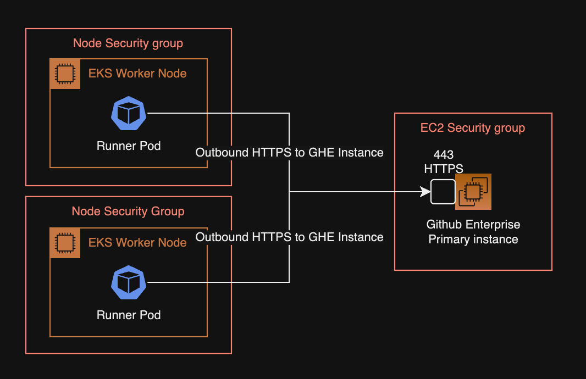
Actions Runner가 GHE 서버와 HTTPS 통신이 불가능한 경우, Runner의 Personal Access Token 등록 과정이 실패하고, 초기화가 실패한 Actions Runner는 실행되지 못하고 Pending 상태에 계속 걸려있게 됩니다.
actions-runner-controller 차트 설치
EKS 클러스터에 Actions Runner Controller를 헬름 차트로 설치합니다.
helm upgrade \
--install \
--namespace actions-runner-system \
--create-namespace \
actions-runner-controller actions-runner-controller/actions-runner-controller \
-f values.yaml \
--wait
Actions Runner Controller가 헬름 차트로 설치되었는지와 파드가 Running 상태인지를 확인합니다.
$ helm list -n actions-runner-system
NAME NAMESPACE REVISION UPDATED STATUS CHART APP VERSION
actions-runner-controller actions-runner-system 6 2023-07-13 03:30:55.747469 +0900 KST deployed actions-runner-controller-0.23.3 0.27.4
$ kubectl get pod -n actions-runner-system
NAME READY STATUS RESTARTS AGE
actions-runner-controller-77445d6674-46zgw 2/2 Running 0 76m
actions-runner-controller-77445d6674-v4nw5 2/2 Running 0 100m
헬름 차트도 문제 없으며 Pod도 Running 상태인 걸 확인했습니다.
이전에 설치한 cert-manager에 의해 커스텀 리소스인 certificate도 같이 생성됩니다.
cert-manager에 의해 관리되는 인증서 리소스와 인증서 발급자 리소스 상태를 확인합니다.
kubectl get issuer,certificate \
-n actions-runner-system \
-o wide
NAME READY STATUS AGE
issuer.cert-manager.io/actions-runner-controller-selfsigned-issuer True 55d
NAME READY SECRET ISSUER STATUS AGE
certificate.cert-manager.io/actions-runner-controller-serving-cert True actions-runner-controller-serving-cert actions-runner-controller-selfsigned-issuer Certificate is up to date and has not expired 55d
인증서가 READY true 상태이면 정상적으로 Actions Runner Controller의 서비스 제공이 준비되었다고 판단할 수 있습니다. 이러한 인증서 인프라 구성을 위해 사전에 cert-manager 설치가 필요합니다.
Actions Runner Controller가 설치 완료되었습니다. 이제 Actions Runner Pod를 배포할 수 있습니다.
actions-runner 설치 및 구성
현재 클러스터에 Runner 관련 CRD가 구성되어 있는지 확인합니다. 아래 CRD들은 Actions Runner Controller를 헬름차트로 설치할 때 자동으로 같이 설치됩니다.
$ kubectl api-resources | grep runner
horizontalrunnerautoscalers hra actions.summerwind.dev/v1alpha1 true HorizontalRunnerAutoscaler
runnerdeployments rdeploy actions.summerwind.dev/v1alpha1 true RunnerDeployment
runnerreplicasets rrs actions.summerwind.dev/v1alpha1 true RunnerReplicaSet
runners actions.summerwind.dev/v1alpha1 true Runner
runnersets actions.summerwind.dev/v1alpha1 true RunnerSet
위 Runner 관련 CRD 중에서 현재 시나리오에서 사용할 리소스는 hra와 rdeploy입니다.
이제 Actions Runner를 배포하기 위해 러너용 YAML을 작성합니다.
Runner와 Horizontal Runner Autoscaler 리소스는 actions-runner 네임스페이스에 위치합니다.
# runners.yaml
---
apiVersion: actions.summerwind.dev/v1alpha1
kind: RunnerDeployment
metadata:
name: test-basic-runner
namespace: actions-runner
labels:
environment: test
maintainer: younsung.lee
spec:
template:
spec:
enterprise: dogecompany
labels:
- t3a.large
- support-horizontal-runner-autoscaling
- ubuntu-20.04
- v2.306.0
resources:
# -- Change the value according to your Instance spec.
limits:
cpu: "1.5"
memory: "6Gi"
# -- Change the value according to your Instance spec.
requests:
cpu: "0.5"
memory: "1Gi"
---
apiVersion: actions.summerwind.dev/v1alpha1
kind: HorizontalRunnerAutoscaler
metadata:
name: test-basic-runner-autoscaler
namespace: actions-runner
labels:
environment: test
maintainer: younsung.lee
spec:
# Runners in the targeted RunnerDeployment won't be scaled down
# for 5 minutes instead of the default 10 minutes now
scaleDownDelaySecondsAfterScaleOut: 300
scaleTargetRef:
kind: RunnerDeployment
name: test-basic-runner
minReplicas: 2
maxReplicas: 16
scheduledOverrides:
# -- 주말에는 Runner 리소스 절약하기
# minReplicas를 토요일 오전 0시(KST)부터 월요일 오전 0시(KST)까지 0으로 지정
- startTime: "2023-07-15T00:00:00+09:00"
endTime: "2023-07-17T00:00:00+09:00"
recurrenceRule:
frequency: Weekly
minReplicas: 1
metrics:
- type: PercentageRunnersBusy
# 사용 중인 Runner의 비율이 75%('0.75')보다 크면 러너 수를 scale-out
# 사용 중인 Runenr의 비율이 25%('0.25')보다 작으면 러너 수를 scale-in
scaleUpThreshold: '0.75'
scaleDownThreshold: '0.25'
# 증가시킬 때는 현재 러너 수의 '2' 배만큼 증가시키고
# 감소시킬 때는 현재 러너 수의 절반 '0.5' 만큼 감소
scaleUpFactor: '2'
scaleDownFactor: '0.5'
HRA 스케줄 설정에 주말동안은 최소 리소스로 운영하도록 설정해놓았기 때문에, 주말에 확인하면 Runner가 1개로 유지되고 있는 걸 확인할 수 있습니다.
$ kubectl get hra -n actions-runner
NAME MIN MAX DESIRED SCHEDULE
test-basic-runner-autoscaler 2 16 1 min=2 time=2023-07-16 15:00:00 +0000 UTC
HRA의 scheduledOverrides 설정에서 한국시간 기준(+09:00)로 표기는 가능하나, kubectl로 SCHEDULE 값을 확인한 결과는 UTC 기준으로 표기되는 건 좀 아쉬운 부분입니다.
Scale to Zero 설정시 주의사항
Actions Runner Controller v0.19.0 이상부터 minReplicas를 0으로 설정할 수 있도록 Scale to Zero 기능을 지원합니다.
Scale to Zero 설정시 주의사항이 있습니다.
- 스케일 아웃 기준이 되는
metrics값으로PercentageRunnersBusy를 사용중이라면,minReplicas를 적어도1이상으로 설정해야 합니다. minReplicas가0인 경우, 스케일 아웃이 발생하려면 반드시 하나 이상의 Runner가 필요한데,minReplicas가0인 경우 실행중인 Runner 개수는 계속해서 0이므로 절대 확장을 못하는 루프에 빠지게 됩니다.
문제가 발생하는 HRA 설정의 예는 다음과 같습니다.
# runners.yaml
---
apiVersion: actions.summerwind.dev/v1alpha1
kind: HorizontalRunnerAutoscaler
...
spec:
...
minReplicas: 2
maxReplicas: 16
scheduledOverrides:
- startTime: "2023-07-15T00:00:00+09:00"
endTime: "2023-07-17T00:00:00+09:00"
recurrenceRule:
frequency: Weekly
minReplicas: 0
metrics:
# -- minRelicas: 0과 PercentageRunnersBusy는 절대 같이 사용 불가
- type: PercentageRunnersBusy
minReplicas를 0으로 설정해서 사용하고 싶다면 메트릭 기준을 Runner의 사용 대수를 기준으로 하는 PercentageRunnersBusy 대신 TotalNumberOfQueuedAndInProgressWorkflows 메트릭이나 Webhook-based autoscaling 방식을 사용해서 이 문제를 해결할 수 있습니다.
만약 Actions Runner를 특정 Organization에서만 공유해서 쓰고 싶다면, 다음과 같이 RunnerDeployment 설정에서 spec.template.spec.organization 값에 Github Organization 이름을 입력합니다.
# runners.yaml
---
apiVersion: actions.summerwind.dev/v1alpha1
kind: RunnerDeployment
...
spec:
template:
spec:
# -- 3 valid runner scope options
# enterprise: YOUR_ENTERPRISE_NAME
organization: dogecompany
# repository: YOUR_SPECIFIC_REPOSITORY_NAME
...
Actions Runner를 관리 계층의 다양한 레벨에 맞게 할당할 수 있습니다. 개발조직 전체가 포괄적으로 쓰는 Runner인지, 특정 레포지터리에서만 사용 가능한 Runner인지를 이를 통해 구분하게 됩니다.
- Repository 레벨의 Actions Runner는 단일 Repository 전용입니다. Actions Runner가 Repository 레벨에 할당된 경우, 다른 Repository의 Actions Workflow를 처리할 수 없습니다.
- Organization 레벨의 Actions Runner는 같은 Organization에 속한 여러 Repository에 대한 작업을 처리할 수 있습니다.
- Enterprise 레벨의 Actions Runner는 Enterprise 계정에 속한 여러 Organization에 걸쳐 할당될 수 있습니다.
위 설정은 Runner의 개수를 러너 사용률에 따라 수평적으로 늘려주고 줄여주는 HRAHorizontalRunnerAutoscaler를 RunnerDeployment에 붙여놓은 구성입니다.
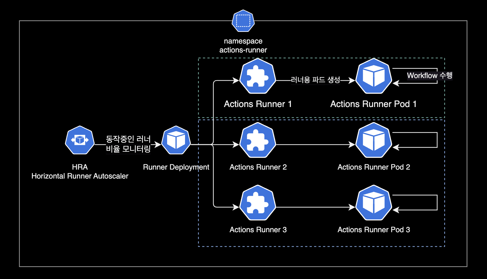
HRA의 설정에서 spec.scaleUpFactor가 2이므로 늘어날 때는 2배로 늘어납니다. spec.scaleDownFactor가 0.5이므로 줄어들 때는 0.5배로 줄어듭니다.
metrics:
- type: PercentageRunnersBusy
...
scaleUpFactor: '2'
scaleDownFactor: '0.5'
- 늘어날 때 Runer 수 변화 (x 2) : min 2 → 4 → 8 → 16 max
- 줄어들 때 Runner 수 변화 (x 0.5) : max 16 → 8 → 4 → 2 min
비율이 아닌 절대값으로 추가 또는 삭제할 Runner 개수를 지정하는 방법도 있습니다.
metrics:
- type: PercentageRunnersBusy
...
scaleUpAdujustment: 2 # The scale up runner count added to desired count
scaleDownAdjustment: 1 # The scale down runner count subtracted from the desired count
한 번 스케일 아웃되면 기본적으로 10분(600초)간 늘어난 Runner 개수를 유지하게 됩니다. (모든 러너가 Idle 상태로 쉬고 있을지라도)
이 스케일 아웃 기본 유지시간은 HPA의 spec.scaleDownDelaySecondsAfterScaleOut 값을 통해 변경할 수 있습니다.
# runners.yaml
...
---
apiVersion: actions.summerwind.dev/v1alpha1
kind: HorizontalRunnerAutoscaler
...
spec:
scaleDownDelaySecondsAfterScaleOut: 300
...
Actions Runner와 Runner Pod가 위치하는 actions-runner 네임스페이스를 생성합니다.
$ kubectl create namespace actions-runner
작성한 Runner YAML로 배포합니다. Runner는 default 네임스페이스에 배치해도 상관 없습니다.
$ kubectl apply -f runners.yaml
runnerdeployment.actions.summerwind.dev/test-basic-runner created
horizontalrunnerautoscaler.actions.summerwind.dev/test-basic-runner-autoscaler created
Runner가 생성된 후 약 7초 정도 기다리면 Runner가 파드를 생성하고 상태가 Pending에서 Running으로 변합니다.
$ kubectl get runner -n actions-runner
NAME ENTERPRISE ORGANIZATION REPOSITORY GROUP LABELS STATUS MESSAGE WF REPO WF RUN AGE
test-basic-runner-qr6gr-kckjh dogecompany ["t3a.large","support-horizontal-runner-autoscaling","ubuntu-20.04","v2.306.0"] Running 34m
test-basic-runner-qr6gr-pk5kf dogecompany ["t3a.large","support-horizontal-runner-autoscaling","ubuntu-20.04","v2.306.0"] Running 34m
$ kubectl describe runner -n actions-runner test-basic-runner-qr6gr-kckjh
...
Events:
Type Reason Age From Message
---- ------ ---- ---- -------
Normal RegistrationTokenUpdated 38m runner-controller Successfully update registration token
Normal PodCreated 38m runner-controller Created pod 'test-basic-runner-mvgqp-wjq94'
Runner의 이벤트 정보를 보면 Runner CRD는 Actions Runner Controller에 입력되어 있는 PAT를 등록한 후, Runner의 실체인 Pod를 만듭니다.
Actions Runner의 리소스 구성은 다음과 같습니다.
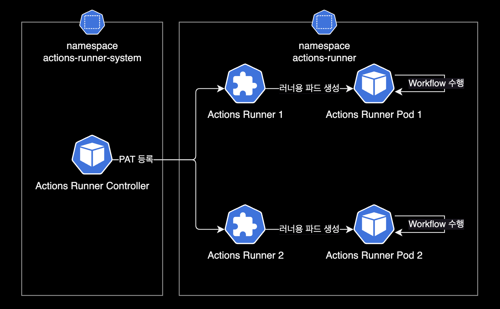
정상적으로 Github Enterprise Server에 Runner가 등록된 경우 Organization Settings에서 Runner 목록이 다음과 같이 조회되어야 합니다.
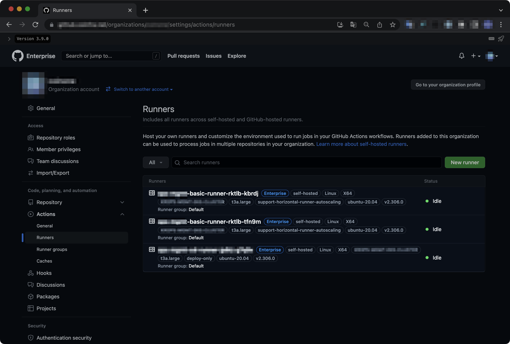
actions-runner 테스트
테스트용 레포를 생성한 후, 샘플 Actions Workflow를 아래와 같이 작성합니다.
아래 Workflow는 Github 공식문서에 나오는 Quickstart Workflow입니다.
name: GitHub Actions Demo
run-name: ${{ github.actor }} is testing out GitHub Actions 🚀
on:
workflow_dispatch:
jobs:
Explore-GitHub-Actions:
runs-on: [self-hosted, linux]
outputs:
tag_date: ${{ steps.tag.outputs.date }}
tag_git_hash: ${{ steps.tag.outputs.git_hash }}
steps:
- run: echo "🎉 The job was automatically triggered by a ${{ github.event_name }} event."
- run: echo "🐧 This job is now running on a ${{ runner.os }} server hosted by GitHub!"
- run: echo "🔎 The name of your branch is ${{ github.ref }} and your repository is ${{ github.repository }}."
- name: Check out repository code
uses: actions/checkout@v3
- run: echo "💡 The ${{ github.repository }} repository has been cloned to the runner."
- run: echo "🖥️ The workflow is now ready to test your code on the runner."
- name: List files in the repository
run: |
ls ${{ github.workspace }}
- run: echo "🍏 This job's status is ${{ job.status }}"
특별한 동작은 없고 echo 명령어로 메세지를 연달아 출력하는 아주 간단한 테스트용 워크플로우입니다.
이후 Actions Runner가 정상적으로 Workflow를 처리하는 지 확인합니다.
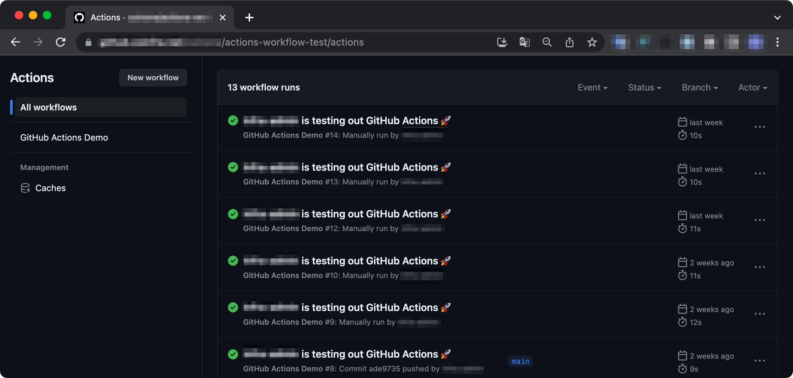
Repository에서 Actions 메뉴로 들어가면, Workflow가 Runner에 할당되어 문제없이 완료처리된 걸 확인할 수 있습니다.
한 번 Workflow를 수행한 Runner는 자동 삭제됩니다. 이후 빈자리를 채울 새 Runner와 Pod가 빠르게 생성됩니다.
더 나아가서
dind
기본적으로 Actions Runner는 특별한 설정 없이 기본값인 dinddocker in docker 방식으로 설정되어 운영됩니다.
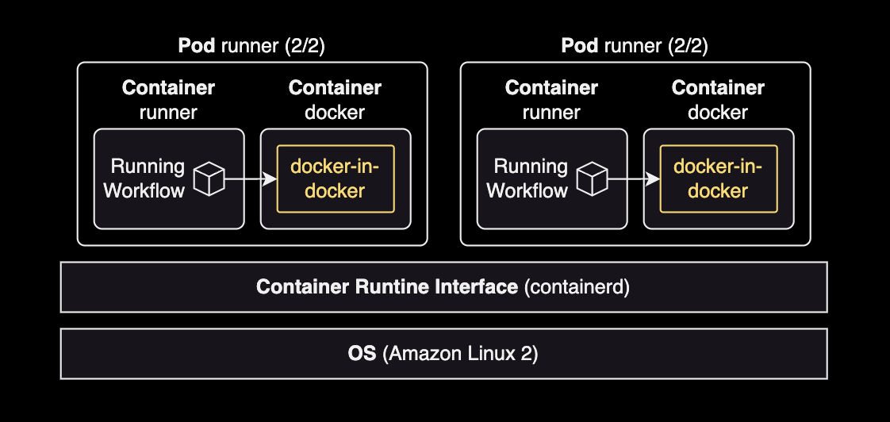
Actions Runner 파드는 2개의 컨테이너로 구성됩니다.
- runner : 일반적인 Actions Workflow 실행
- docker :
docker run이나 컨테이너 구동시에 docker 컨테이너 안에서 docker in docker 방식으로 컨테이너를 띄워서 작업을 수행함
Actions Runner는 dind와 dooddocker out of docker 방식도 지원하나 별도의 설정이 필요합니다.
임시 공유볼륨
쿠버네티스의 네이티브한 기능인 emptyDir을 사용해서 runner 컨테이너와 docker 컨테이너 양쪽에 임시 공유볼륨을 사용하게 설정할 수도 있습니다.
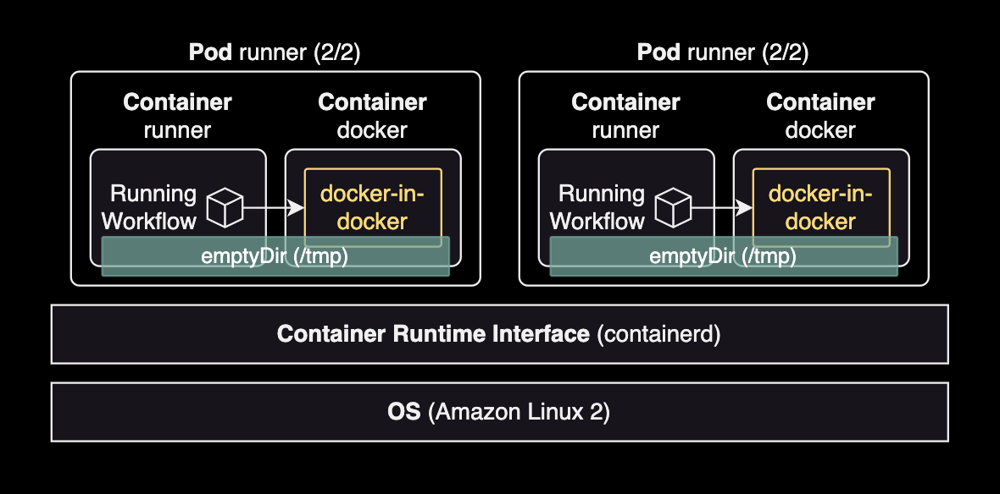
아래 RunnerDeployment 변경사항은 emptyDir 볼륨을 두 컨테이너의 /tmp 경로에 공유하도록 설정하는 예시입니다.
---
apiVersion: actions.summerwind.dev/v1alpha1
kind: RunnerDeployment
metadata:
name: example-runner-deploy
namespace: actions-runner
spec:
template:
spec:
organization: dogecompany
+ dockerVolumeMounts:
+ - mountPath: /tmp
+ name: tmp
+ volumeMounts:
+ - mountPath: /tmp
+ name: tmp
+ volumes:
+ - name: tmp
+ emptyDir: {}
...
Actions Workflow 작업과 docker-in-docker로 구동할 때 양쪽 모두에서 필요한 데이터를 /tmp에 저장하면 두 컨테이너 모두에서 사용 가능하게 됩니다.
자세한 사항은 Actions Runner Controller 공식문서 Using custom volumes를 참고합니다.
IRSA
Actions Runner의 IRSA 동작 방식
Actions Runner 파드도 일반적인 파드와 마찬가지로 IRSAIAM Role for Service Account를 통해서 AWS 권한을 사용 가능합니다.
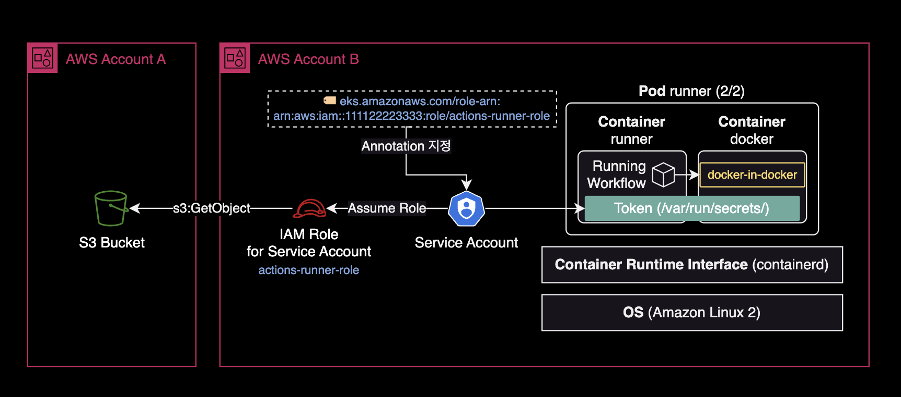
위와 같은 Cross Account 환경에서 B 계정의 IAM 역할(Role)이 A 계정의 S3 버킷에 접근하려면 버킷 정책에 Principal을 추가하여 접근을 허용해주어야 합니다.
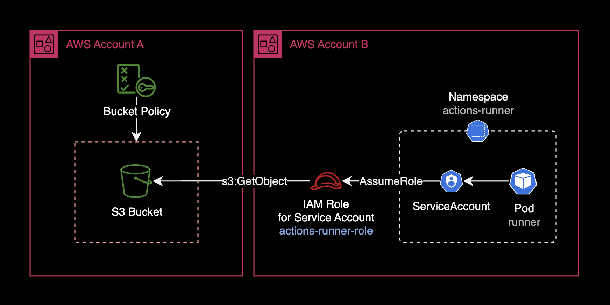
S3 버킷 정책의 모범사례
아래는 B Account에 위치한 EKS용 IAM Role에 한하여 접근을 허용하는 S3 버킷 정책Bucket policy의 예시입니다.
{
"Version": "2012-10-17",
"Id": "CrossAccountS3BucketAccessPolicy",
"Statement": [
{
"Sid": "AllowCrossAccountS3BucketAccess",
"Effect": "Allow",
"Principal": {
"AWS": "arn:aws:iam::111122223333:role/actions-runner-role"
},
"Action": "s3:*",
"Resource": [
"arn:aws:s3:::bucket.dogecompany.com",
"arn:aws:s3:::bucket.dogecompany.com/*"
]
}
]
}
위 버킷 정책 예시에서는 s3:*로 모든 S3 관련 행위를 허용했지만, 아래와 같이 최소 권한 원칙을 준수해서 버킷 정책을 제한하는 걸 매우 권장합니다.
{
"Version": "2012-10-17",
"Id": "CrossAccountS3BucketAccessPolicy",
"Statement": [
{
"Sid": "AllowCrossAccountS3BucketAccess",
"Effect": "Allow",
"Principal": {
"AWS": "arn:aws:iam::111122223333:role/actions-runner-role"
},
"Action": [
"s3:ListBucket",
"s3:GetObject",
"s3:GetObjectAcl",
"s3:PutObject",
"s3:PutObjectAcl"
],
"Resource": [
"arn:aws:s3:::bucket.dogecompany.com",
"arn:aws:s3:::bucket.dogecompany.com/*"
]
}
]
}
ServiceAccount와 IAM Role 설정
Actions Runner 파드가 IRSA를 사용해서 AWS 권한을 사용하려면, 쿠버네티스 클러스터에 Service Account와 RoleBinding 리소스를 미리 만들어 놓아야 합니다.
Service Account가 IAM Role을 수임Assume Role할 수 있도록 하려면, Service Account 리소스에 eks.amazonaws.com/role-arn Annotation을 아래와 같이 지정해주어야 합니다.
---
apiVersion: v1
kind: ServiceAccount
metadata:
name: actions-runner-role
namespace: actions-runner
annotations:
# -- Service Account에 연결할 IAM Role의 ARN 값을 입력
eks.amazonaws.com/role-arn: arn:aws:iam::111122223333:role/actions-runner-role
...
이제 Service Account가 수임할 IAM Role에 신뢰관계Trust Relationship을 설정해야 합니다.
아래는 IAM Role에 설정된 신뢰관계Trust Relationship 예시 설정입니다.
{
"Version": "2012-10-17",
"Statement": [
{
"Sid": "AllowAssumeRoleForServiceAccountFromActionsRunnerPod",
"Effect": "Allow",
"Principal": {
"Federated": "arn:aws:iam::111122223333:oidc-provider/oidc.eks.REGION.amazonaws.com/id/EXAMPLED539D4633E53DE1B716D3041A"
},
"Action": "sts:AssumeRoleWithWebIdentity",
"Condition": {
"StringEquals": {
"oidc.eks.REGION.amazonaws.com/id/EXAMPLED539D4633E53DE1B716D3041A:sub": "system:serviceaccount:actions-runner:actions-runner-role"
}
}
}
]
}
더 자세한 사항은 AWS 공식문서 IAM 역할을 수임하도록 Kubernetes 서비스 계정 구성를 참고합니다.
IAM Role과 Service Account 리소스를 세팅했다면 IRSAIAM Role for Servcie Account를 사용할 파드 spec 값에 serviceAccountName과 fsGroup 값을 추가하기만 하면 됩니다.
---
apiVersion: actions.summerwind.dev/v1alpha1
kind: RunnerDeployment
metadata:
name: example-runner-deploy
namespace: actions-runner
spec:
template:
spec:
organization: dogecompany
# Specify the name of the Service Account that the runner will use
serviceAccountName: actions-runner-role
securityContext:
# -- Use 1000 For Ubuntu 20.04 runner
#fsGroup: 1000
# -- Use 1001 for Ubuntu 22.04 runner
fsGroup: 1001
Actions Runner의 컨테이너 이미지가 Ubuntu 20.04 기반이면 fsGroup: 1000으로 설정하고, Ubuntu 22.04 기반이면 fsGroup: 1001로 설정합니다.
이제 Actions Runner 파드가 구동될 때마다 쿠버네티스의 Admission Controller는 컨테이너 안에 ServiceAccount 토큰을 볼륨 마운트합니다.
ServiceAccount의 토큰은 runner 컨테이너와 docker 컨테이너 양쪽 모두에 /var/run/secrets/eks.amazonaws.com/serviceaccount/token에 마운트됩니다. Runner와 Docker 컨테이너 양쪽 모두에 IRSA용 토큰이 자동적으로 공유됩니다. 이를 통해 컨테이너가 Workflow 실행시 IAM Role을 통해 AWS 권한을 사용할 수 있습니다.
더 자세한 설명은 Actions Runner Controller 공식문서 Authenticating to the GitHub API를 참고합니다.
docker-in-docker로 띄운 컨테이너에서 IRSA를 사용하려면 아래 2가지 조치를 취해야 합니다.
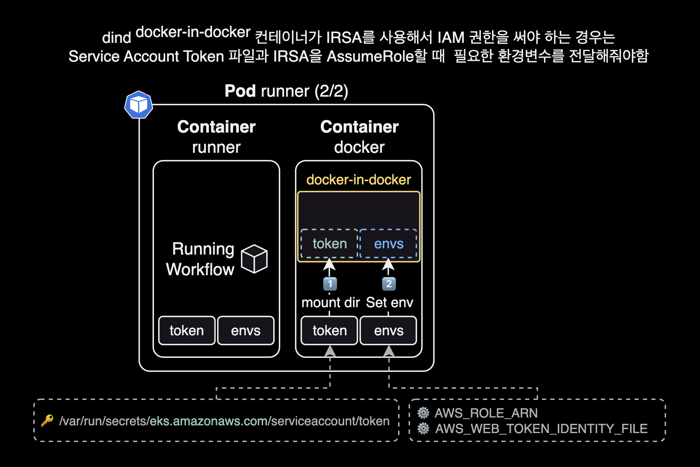
- 파드에 붙어있는
/var/run/secrets를 동일한 경로에 볼륨 마운트해서 토큰 넘겨주기 - IRSA 실행에 필요한 환경변수 2개 넘겨주기:
AWS_ROLE_ARN,AWS_WEB_IDENTITY_TOKEN_FILE
만약 위와 같이 dind 컨테이너로 Token과 IRSA 관련 환경변수를 전달하지 않으면, runner 컨테이너와 docker 컨테이너에서는 IRSA를 AssumeRole 할 수 있지만, 정작 dind 컨테이너에서는 IRSA에 접근하지 못하는 문제가 발생하게 됩니다.
위 필수 사항을 적용한 Actions Workflow의 docker run 작성 예시입니다.
name: Testing IRSA for docker in docker container
run-name: ${{ github.actor }} is testing out IRSA for docker in docker container 🐋
jobs:
dind:
runs-on: [self-hosted, linux]
steps:
...
- name: Running docker run command in dind
run: |
#----------------------------------------------
# !!! NOTE: dind (docker-in-docker) !!!
# The `docker run` command is processed by
# the "docker" container, NOT runner container
# in the runner pod.
#----------------------------------------------
docker run \
--name dind-test \
-v /var/run/secrets:/var/run/secrets \
-e AWS_ROLE_ARN \
-e AWS_WEB_IDENTITY_TOKEN_FILE \
... \
aws-cli:2.13.5 $YOUR_ARGS
docker in docker로 띄운 컨테이너에서 IRSA 권한 에러 발생시 Using EKS IAM role for service accounts within container #246 이슈를 참고하도록 합니다.
모니터링
Actions Runner Controller Pod는 특별한 추가 설정 없이도 /metrics Path를 통해 기본적으로 Prometheus 메트릭을 제공하고 있습니다. ARC 전용 Grafana Dashboard도 같이 제공되므로 비교적 쉽게 모니터링을 구성할 수 있습니다.
제가 Grafana에 등록해서 사용하고 있는 대시보드 화면입니다.
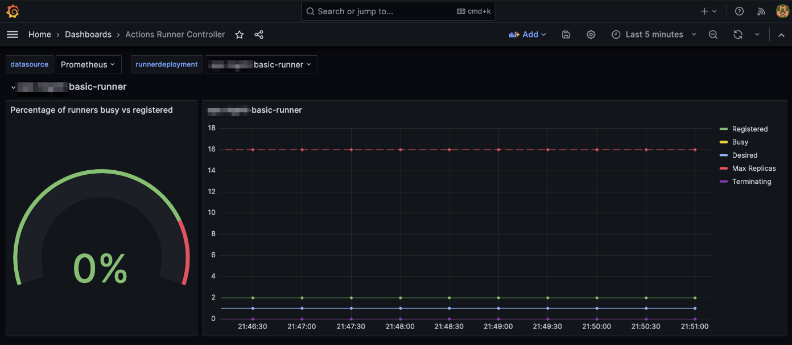
Actions Runner Controller와 Prometheus를 연동하는 구성 방법은 제가 작성한 Prometheus Operator 페이지와 Actions Runner Controller 공식문서 Monitoring and troubleshooting를 참고하세요.
참고자료
ARC 헬름차트 설치 관련 문서
Actions Runner Controller Github
Actions Runner Controller는 공식문서가 친절한 편이라 위 링크만 봐도 설치, 구성에는 전혀 문제가 없었습니다.
IRSA 구성 관련 문서
Actions Runner의 IAM Role for Service Account 설정 가이드
Using EKS IAM role for service accounts within container #246